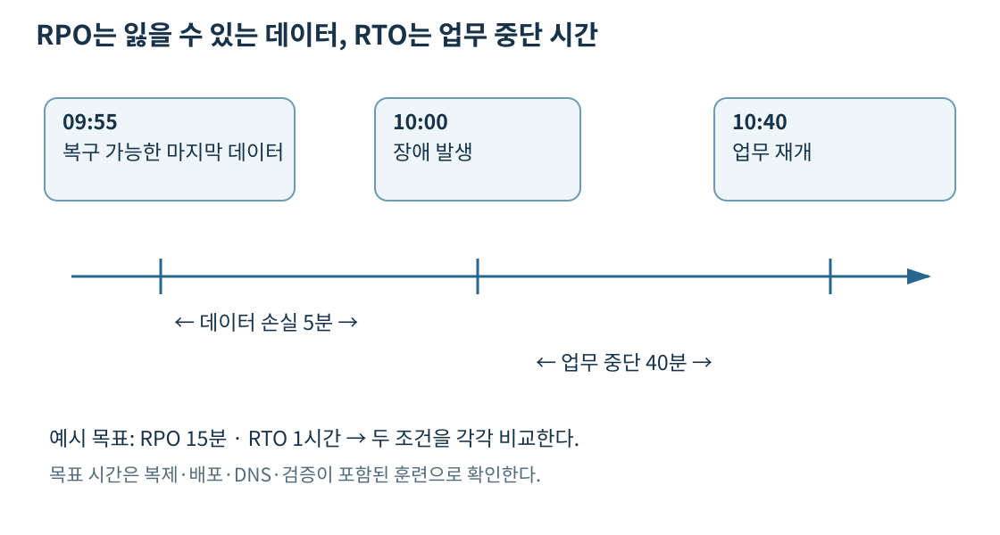
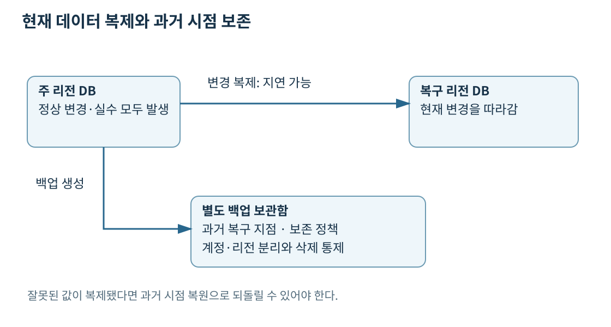
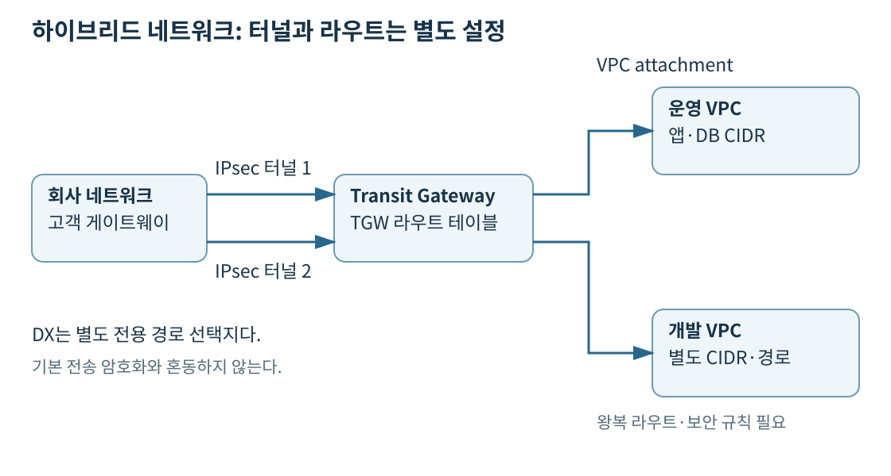
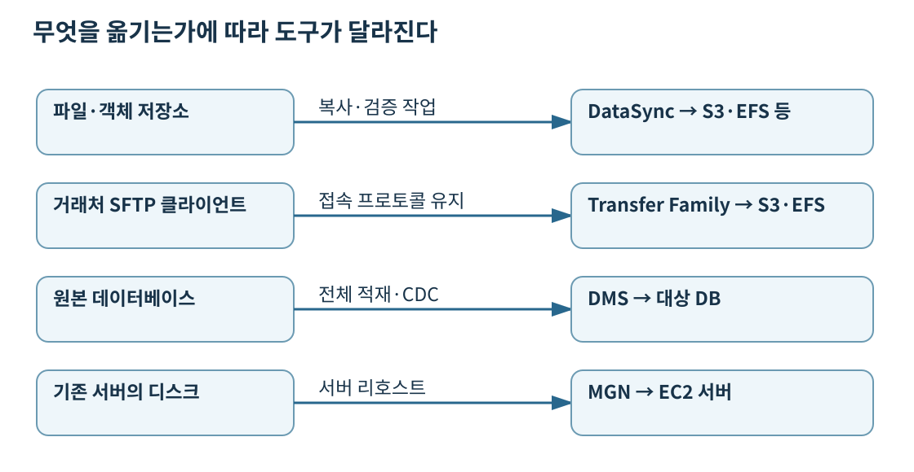

프로젝트 홈 · 12일 차 · 14일 차 · 30일 계획
백업은 과거 데이터를 남기는 작업이고, 재해 복구(DR)는 장애 뒤에 사용자가 업무를 다시 할 수 있도록 데이터·서버·네트워크·권한을 되살리는 과정이다. 데이터만 복사해 놓고 애플리케이션을 실행할 방법이 없으면 복구 설계가 끝난 것이 아니다. 여러 AZ로 구성하면 한 AZ 장애에 대응할 수 있지만, 리전 전체 장애와 운영자의 잘못된 삭제까지 같은 방식으로 해결되지는 않는다.
**RPO(Recovery Point Objective)**는 감수할 수 있는 데이터 손실의 시간 범위다. **RTO(Recovery Time Objective)**는 업무가 중단된 뒤 복구까지 허용하는 시간이다. 둘은 목표이며 서비스 이름만으로 자동 보장되는 수치가 아니다.

오전 10시에 장애가 났고 가장 최근에 복구 가능한 데이터가 9시 55분이라면, 그 사이 5분의 변경을 잃을 수 있다. 10시 40분에 업무가 재개되면 실제 복구 시간은 40분이다. 요구가 RPO 15분·RTO 1시간이라면 이 사례는 두 목표를 만족한다. 그러나 9시 30분 백업밖에 없으면 서버를 10분 만에 켜도 RPO는 만족하지 못한다.
일일 백업이 항상 24시간의 손실을 낸다는 뜻은 아니지만, 장애 시점에 따라 마지막 백업 이후 거의 하루의 변경을 잃을 수 있다. 복구 시점은 백업 파일이 만들어진 시각만이 아니라 정상적으로 복원할 수 있는 데이터의 시각으로 계산한다. 복제 지연이 커졌거나 백업이 실패했다면 예상보다 오래된 시점으로 돌아가야 한다.
복구 시간에는 장애 탐지, 복구 판단, 데이터 복원, 서버 시작, 용량 확장, 설정 확인, 트래픽 전환, 기능 검증이 포함된다. “DB 복원 20분”이라는 측정만으로 주문 서비스 RTO 20분을 주장할 수 없다. 결제 연동과 인증이 동작하고 사용자가 주문할 수 있어야 업무가 복구된다.
DB 복원 완료 → 앱 시작 → 피크 용량 확보 → 인증·외부 API 확인 → 트래픽 전환 → 실제 주문 읽기·쓰기 검증을 따라간다. RTO는 이 경로의 끝까지 포함한다. 0대에서 앱 준비 20분인 환경은 RTO 15분을 만족하지 못한다. 실행 중인 2대에서 20대 확장 8분과 DB·전환 3분으로 11분이 걸리면, 준비된 용량·외부 인증이라는 전제 아래 warm standby가 목표를 맞출 수 있다. 상시 20대를 유지하면 비용이 더 들고, 수동 승인에 40분을 쓰는 환경은 서버를 늘려도 그 승인 시간이 없어지지 않는다.
단계별 훈련과 지표 해석에서 RPO와 복구 절차·용량·재시도 병목을 함께 계산한다.
복구에 필요한 것을 평소에 얼마나 준비해 두느냐에 따라 비용과 복구 작업량이 달라진다. 네 전략은 특정 서비스의 고정 SLA가 아니라 아키텍처 패턴이다. 데이터 양, 복제 방식, 자동화, 확보 가능한 용량에 따라 같은 패턴도 복구 시간이 달라진다.
| 전략 | 평소 복구 환경 | 장애 후 해야 할 일 | 비용·운영 부담 |
|---|---|---|---|
| Backup and restore | 백업과 배포 정의 보관 | 인프라 생성, 데이터 복원, 검증, 전환 | 상시 실행 자원이 적지만 복원 작업이 큼 |
| Pilot light | 핵심 데이터 계층 등을 유지·복제 | 앱 계층 시작·배포와 확장, 전환 | 백업 복원보다 준비가 많고 상시 비용 발생 |
| Warm standby | 축소했지만 기능하는 전체 환경 | 용량 확장, 쓰기 역할 변경, 전환 | 축소 환경의 운영·데이터 복제 비용 |
| Multi-site active/active | 여러 리전에서 요청 처리 | 장애 리전 제외, 남은 용량 확보·데이터 충돌 처리 | 상시 비용과 분산 데이터 운영 복잡성이 큼 |
Pilot light는 가스 기기의 작은 불씨처럼 핵심만 남겨 두는 구조다. 예를 들어 복구 리전에 DB 복제를 유지하고 앱 서버는 배포 정의만 보관한다. 장애 시 앱 계층을 실제로 실행해야 한다. Warm standby는 DB뿐 아니라 소규모 앱 서버와 로드 밸런서까지 동작해 기능 검증이 가능한 구조다. 두 방식은 “서버 몇 대”보다 추가 구축 없이 요청을 처리할 수 있는지로 구분하면 이해하기 쉽다.
Active/active도 복구 시간이 0이라는 뜻은 아니다. 장애 탐지와 DNS·라우팅 반영, 진행 중 요청 재시도, 쓰기 충돌과 세션 처리에 시간이 든다. 남은 리전이 전체 요청을 감당할 용량도 필요하다. 서로 다른 두 리전의 일반 RDS DB에 동시에 쓰기만 허용하면 자동으로 안전한 다중 리전 DB가 되는 것은 아니다.
출처: 네 가지 DR 전략, Pilot light와 Warm standby 비교, Pilot light, Warm standby, Active/active
리전 간 복제는 주 리전의 변경을 다른 리전에 전달한다. 리전 장애에는 유용하지만 잘못된 수정과 삭제도 복제될 수 있다. 고객 주소 전체를 잘못 덮어쓴 직후 복제본까지 같은 값이 되면, 복제본 승격으로 주소를 되돌릴 수 없다. 변경 전 시점의 백업·버전·PITR과 별도의 보존 정책이 필요하다.

RDS의 자동 백업과 시점 복구, S3 Versioning과 Object Lock처럼 자원별 복원 수단도 구분한다. S3 Object Lock은 버전 단위의 보존과 법적 보존을 위한 WORM 기능이며, 리전 간 트래픽 라우팅을 바꾸는 기능이 아니다. 복제 지연과 실제 복원 가능 시점은 모니터링한다.
출처: RDS 백업과 복원, S3 Object Lock
AWS Backup은 지원되는 여러 AWS 자원의 백업 일정과 보존을 중앙에서 관리한다. 백업 계획에서 주기와 수명 주기를 정하고 태그나 리소스로 대상을 선택한다. 실제 복원 데이터는 복구 지점으로 관리되며 백업 보관함(backup vault)에 보관한다. 모든 서비스·리전·백업 유형이 동일한 기능을 지원한다고 가정하지 않는다.
| 구성 요소 | 정하는 내용 | 주문 시스템의 예 |
|---|---|---|
| Backup plan | 일정·보존·복사 규칙 | 매일 생성, 35일 유지, 다른 리전 복사 |
| Resource assignment | 백업할 자원 | 운영 DB와 지정 EBS 볼륨 |
| Backup vault | 복구 지점의 보관 경계·접근 정책 | 운영 백업용 보관함 |
| Vault access policy | 보관함에 대한 작업 권한 | 승인된 역할의 복사·복원 허용 |
| Vault Lock | 보존 기간 동안 삭제·변경 제한 | 규정상 삭제할 수 없는 복구 지점 |
다른 계정의 보관함으로 복사하면 운영 계정 침해와 실수에 대한 경계를 추가할 수 있다. 다른 리전 복사는 리전 장애에 대비한다. 둘은 해결하는 장애 범위가 다르다. 교차 계정 복사에는 Organizations 관계, 대상 보관함 정책, 리소스 지원 여부, KMS 키 접근 같은 조건을 확인한다. 보관함 정책이 허용돼도 KMS 복호화 권한이 없으면 데이터를 사용할 수 없다.
Vault Lock에는 governance와 compliance 모드가 있다. Compliance 모드는 유예 시간이 끝나면 복구 지점이 남아 있는 동안 고객이나 AWS도 잠금 구성을 바꿔 임의 삭제할 수 없도록 한다. 잘못 긴 보존 기간을 적용하면 저장 비용도 오래 남는다. S3 Object Lock과 AWS Backup Vault Lock은 서로 다른 저장 대상의 보존 통제이므로 이름만 바꿔 사용할 수 없다.
출처: AWS Backup 개요, 교차 계정 백업, 리전 간 복사, Vault Lock
백업 작업 성공과 복원 성공도 다르다. 격리된 환경에서 복원해 DB 연결·레코드 일관성·암호화 키·앱 기동을 확인하고 실제 시간을 잰다. IaC로 VPC·보안 그룹·로드 밸런서를 복원하더라도 인증서, DNS, Secrets Manager 비밀값, 외부 결제사의 허용 IP, 리전별 서비스 할당량이 빠지면 업무는 멈춘다. 복구 절차서는 관리자 한 명의 노트북과 원래 리전의 로그인 서비스에만 의존하지 않게 준비한다.
출처: 복구 테스트, AWS Backup 복원 테스트
Governance 잠금은 충분한 IAM 권한으로 제거할 수 있고 compliance는 유예 시간 종료 후 복구 지점이 남아 있는 잠금을 변경·제거할 수 없다. 최소 보존 30일인 보관함에 90일 수명 주기의 복사본을 넣으면 30일 뒤 삭제할 수 있는 것이 아니다. 복사본의 90일 보존을 따라야 한다. 삭제 방지는 복원 권한이나 암호화 키의 생존을 대신하지 않는다. 다른 계정 vault 정책·백업 역할·원본 및 대상 KMS 지원 조건을 맞춘 뒤 보관 계정 역할로 실제 복원해야 계정 분리의 효과를 검증할 수 있다.
잠금 모드·수명 주기·교차 계정 키 조건을 함께 확인한다.
온프레미스란 회사 데이터센터처럼 회사가 운영하는 환경이다. 하이브리드는 그 환경과 AWS를 함께 사용하는 구성이다. 회사 서버가 AWS의 프라이빗 IP에 접근하려면 네트워크 연결뿐 아니라 양방향 경로와 보안 규칙이 필요하다.
Site-to-Site VPN은 회사 네트워크와 AWS를 IPsec 터널로 연결한다. 일반적으로 인터넷을 경유하므로 회선 상태에 따른 지연·처리량 변동을 고려한다. 하나의 VPN 연결에는 두 터널이 있으며 둘 다 구성해 AWS 쪽 터널 점검이나 장애에 대비한다. 회사 장비·인터넷 회선이 한 개면 그 지점은 여전히 단일 장애 지점이다.
**Direct Connect(DX)**는 회사 네트워크에서 AWS로 가는 전용 네트워크 연결을 제공한다. 지속적인 대량 전송, 일관된 네트워크 경험이 필요할 때 검토한다. 회선 준비와 통신사업자 연결에 시간이 걸릴 수 있다. 전용 경로라는 이유만으로 전송 암호화가 기본 제공되는 것은 아니다. 지원되는 연결에서 MACsec을 사용하거나 DX와 Site-to-Site VPN을 조합해 IPsec 암호화를 적용하는 등 요구 범위에 맞는 방식을 선택한다. MACsec 보호 구간과 종단 간 TLS 보호 구간도 다르다.
Client VPN은 재택근무자의 노트북처럼 개별 사용자가 인증하고 AWS·회사 자원에 접근하는 관리형 원격 접속이다. 데이터센터 전체를 연결할 Site-to-Site VPN과 요구가 다르다. 사용자 인증이 성공해도 대상 서브넷 경로, 권한 규칙, 보안 그룹이 연결을 허용해야 한다.
출처: Site-to-Site VPN과 두 터널, DX 전송 암호화, Client VPN
DX 한 회선과 서로 다른 가상 인터페이스 두 개를 만들었다고 물리 회선이 두 개가 되지는 않는다. 높은 가용성을 원하면 서로 다른 장비·물리 연결·DX 위치를 포함해 장애 영역을 나눈다. VPN을 보조 경로로 둘 때는 주 경로 중단 후 BGP나 라우팅 우선순위가 어떻게 바뀌는지 시험한다. 보조 회선의 대역폭이 평소 트래픽을 감당하지 못하면 경로 전환만 성공하고 서비스는 느려질 수 있다.
대역폭을 늘리려면 물리 회선 속도와 병렬 경로를 따로 비교한다. 지원되는 Transit Gateway 구성에서는 여러 VPN 터널·연결에 ECMP로 흐름을 분산할 수 있지만, 합산 처리량 증가가 단일 TCP 흐름의 처리량 증가와 같지는 않다. 양쪽 라우터의 BGP·ECMP 지원, 경로 수, 패킷 크기와 앱의 동시 연결 수를 확인하고 실제 부하로 측정한다. DX 속도는 평균 전송량만이 아니라 피크·백업 시간대·남은 회선 장애 시 필요량을 기준으로 선택한다.
출처: VPN ECMP, Direct Connect 복원력 권장 사항
VPN의 IKE는 상대 인증·키 협상을, IPsec은 패킷 암호화를 담당한다. DX public VIF를 통해 공개 IP VPN 종단으로 연결하는 구성과, transit VIF→DX gateway→TGW를 경유하는 private IP VPN은 종단 주소 조건이 다르다. “공개 VPN 종단 금지·라우터부터 AWS VPN 종단까지 IPsec”이면 후자가 후보이고 MACsec만으로 같은 요구를 만족하지 못한다. MACsec은 지원되는 전용 연결·위치·장비에서 링크를 보호한다. DX 속도를 VPN 한 흐름의 속도로 해석하지 않는다.
암호화 구간별 실제 경로를 그림으로 비교한다.
VPC Peering은 두 VPC를 직접 연결한다. 겹치는 CIDR로는 구성할 수 없으며 전이적 라우팅을 제공하지 않는다. A–B와 B–C가 연결돼 있어도 A가 B를 경유해 C에 갈 수 없다. 필요한 양쪽 VPC 라우트와 보안 그룹·NACL 허용도 준비한다.
Transit Gateway(TGW)는 여러 VPC와 온프레미스 연결을 허브에 붙인다. 각 연결은 attachment이며 TGW 라우트 테이블의 연결·전파 설정으로 어떤 attachment가 어느 목적지에 갈 수 있는지 제어한다. 허브에 붙였다고 모든 네트워크가 자동으로 서로 통신하는 것은 아니다. VPC 서브넷의 라우트 테이블에서도 원격 CIDR을 TGW로 보내야 하고 반환 경로도 필요하다.

예를 들어 개발 VPC와 운영 VPC를 같은 TGW에 연결하더라도 각각 다른 TGW 라우트 테이블에 연결해 직접 통신을 막고, 공통 보안 점검 VPC로만 보내는 구성을 할 수 있다. TGW는 IPsec 암호화를 만드는 서비스가 아니며 중복 주소 문제를 자동 해결하지도 않는다. AWS Cloud WAN은 여러 리전·지사의 광역 네트워크를 중앙 정책으로 운영하는 더 넓은 범위의 선택지다.
여러 VPC가 공용 NAT를 함께 쓰게 만들면 NAT 개수를 줄일 수 있으나 TGW 처리 비용·교차 AZ 전송·병목과 장애 범위가 늘 수 있다. 4일 차의 NAT와 라우트 테이블에서 배운 왕복 경로를 실제 트래픽 양과 함께 계산한다. 연결 수만 줄인 구성이 언제나 최저 비용은 아니다.
출처: VPC Peering 제한, TGW 라우트 테이블, Cloud WAN, TGW 요금
Association은 attachment로 들어온 패킷이 사용할 TGW 표를, propagation은 그 표에 올라갈 경로를 정한다. 개발 attachment를 개발 표에 연결하고 공유 DNS 경로만 전파하면 개발→공유는 허용하면서 운영 DB 경로를 제외할 수 있다. 공유 쪽 반환 경로와 VPC 서브넷 경로·SG도 필요하다. 모든 attachment를 기본 표에 연결하고 모든 경로를 전파하면 그룹 경로 분리는 되지 않는다. 동적 BGP VPN의 ECMP는 여러 흐름의 합계 처리량을 늘리는 선택이며 단일 TCP 흐름을 여러 터널 속도의 합으로 만들지 않는다.
TGW association·propagation과 BGP ECMP
Storage Gateway는 로컬 애플리케이션이 익숙한 파일·블록·테이프 인터페이스를 사용하면서 AWS 저장소와 연계하도록 한다. 단순히 데이터를 한 번 옮기는 작업과 달리 기존 앱을 계속 운영하는 동안 로컬과 클라우드를 잇는 저장 계층이다.
| 유형 | 앱에 보이는 인터페이스 | 로컬·클라우드의 역할 | 사용 예 |
|---|---|---|---|
| S3 File Gateway | NFS·SMB 파일 공유 | 로컬 캐시, S3 객체에 파일 데이터 저장 | 파일 공유를 유지하며 S3에 보관 |
| Volume Gateway: cached volumes | iSCSI 블록 볼륨 | 주 데이터는 AWS, 자주 쓰는 데이터 로컬 캐시 | 로컬 용량 증가를 줄이며 볼륨 제공 |
| Volume Gateway: stored volumes | iSCSI 블록 볼륨 | 전체 데이터를 로컬에 유지, 비동기 스냅샷 백업 | 로컬 데이터 접근을 유지하며 클라우드 백업 |
| Tape Gateway | iSCSI 가상 테이프 라이브러리 | 기존 백업 소프트웨어와 가상 테이프·아카이브 연계 | 물리 테이프 운영 대체 |
캐시는 네트워크 단절 때 클라우드 데이터 전체를 대신하는 장치가 아니다. 캐시 미스 시 원격 데이터 접근에 연결이 필요하고, 아직 업로드하지 않은 데이터는 로컬 장애에 영향을 받을 수 있다. 업로드 버퍼와 캐시 용량·회선도 관찰한다. S3 객체를 다른 프로그램에서 직접 변경한 뒤 게이트웨이 파일 목록과 즉시 완전히 일치한다고 가정하지 않고 캐시 새로 고침·동시 변경 조건을 확인한다.
출처: Storage Gateway 유형, S3 File Gateway, Volume Gateway, Tape Gateway

DataSync는 NFS·SMB·객체 저장소와 지원되는 AWS 저장소 사이에서 파일·객체를 이동한다. 작업 단위로 복사하고 검증하며 예약·증분 전송을 구성할 수 있다. 매시간 파일을 동기화하는 작업을 켜 놓았다고 DB 트랜잭션을 실시간 복제하는 것은 아니다. 실행 중인 DB 파일을 파일 복사로만 옮기면 일관성이 깨질 수 있다.
AWS Transfer Family는 SFTP·FTPS·FTP 같은 지원 프로토콜로 S3·EFS에 파일을 주고받는 관리형 접점을 제공한다. 거래처가 기존 SFTP 클라이언트로 매일 송장을 전송해야 하는 요구라면 적합하다. 파일 동기화 작업을 수행할 DataSync와 달리 외부 시스템의 접속 프로토콜을 유지하는 역할이다. FTP는 평문 프로토콜이므로 암호화 요구가 있으면 SFTP·FTPS와 지원 엔드포인트 조건을 검토한다.
출처: DataSync, Transfer Family
**AWS DMS(Database Migration Service)**는 DB 데이터를 옮긴다. 전체 적재(full load)로 기존 데이터를 전송한 뒤 변경 데이터 캡처(CDC)로 원본의 이후 변경을 따라갈 수 있다. 원본 DB에서 필요한 로그·보존 기간·권한을 설정하고 지원되는 소스·대상 조합인지 확인해야 한다. 복제 중에도 앱이 원본에 쓰고 있다면 전환 직전에 쓰기를 멈추거나 통제하고, 지연을 해소한 뒤 대상 연결로 바꾼다.
서로 다른 엔진으로 옮기는 이기종 마이그레이션은 데이터 복사와 스키마·SQL 변환이 별도 과제다. DMS Schema Conversion이나 AWS SCT가 변환을 지원하지만 저장 프로시저·자료형·DB 전용 기능을 모두 자동 변환한다고 보장하지 않는다. 평가 보고서에서 수동 수정 대상을 확인하고 대상 엔진에서 쿼리 결과와 성능을 검증한다. CDC는 잘못된 업데이트도 전달하므로 과거 시점 백업을 대신하지 않는다.
출처: DMS 개요와 스키마 변환, CDC 작업, Schema Conversion
Application Migration Service(MGN)는 서버의 블록 수준 데이터를 복제해 AWS에서 서버를 시작하는 리호스트에 사용한다. OS와 앱 구성을 크게 바꾸지 않고 VM을 옮기는 상황이다. DB 엔진을 다른 제품으로 바꾸는 DMS 작업과 구별한다. 테스트 인스턴스로 부팅·통신·라이선스를 검증한 뒤 전환하며 이관 뒤에도 패치와 운영 책임은 남는다.
Application Discovery Service는 서버 구성·사용량·의존 관계를 조사해 이관 계획에 필요한 근거를 모으는 역할이다. 2025년 11월 7일부터 신규 고객 접수가 중단되어 신규 조사에는 AWS Transform의 현행 기능을 검토한다. 실제 서버 복제 도구와 다르다. Migration Hub는 이관 상태를 모아 보는 용도였으며 2025년 11월 7일부터 신규 고객 접수가 중단됐다. 이름이 목록에 있다고 새 프로젝트의 기본 도구로 고정하지 않는다. Elastic Disaster Recovery(DRS)는 서버 변경을 복제해 재해 시 복구 인스턴스를 시작하는 용도로, 일회성 이전에 초점을 둔 MGN과 운영 목적이 다르다.
출처: MGN, Application Discovery Service, DRS, Migration Hub, Discovery 제공 변경
DMS full load는 기존 행, CDC는 이후 로그 변경을 전달한다. 소스의 로그 형식·권한·보존과 테이블 선택 규칙부터 맞춘다. 스키마·저장 프로시저 변환은 데이터 이동과 별도다. 소스 수집 지연은 작고 대상 지연만 늘며 대상 DB IOPS가 포화면 대상 쓰기 처리량을 개선한다. 여유 있는 복제 인스턴스 메모리만 늘리거나 전체 적재를 다시 해도 그 병목은 남는다. 전환은 소스 쓰기 통제→최종 변경 반영→행·금액·업무 쿼리 검증→대상 연결 순서로 진행한다.
100TB를 100Mbps 회선으로 옮기는 이상적인 시간은 십진 단위로 100 × 10¹² × 8 ÷ (100 × 10⁶)초, 약 92.6일이다. 실제로는 회선 공유·프로토콜 오버헤드·작은 파일·재시도 때문에 더 오래 걸린다. 1Gbps에서도 이론상 약 9.3일이다. 변경 데이터가 계속 생기면 초회 복사 뒤 증분 반영 시간까지 계산한다. 데이터 크기와 대역폭을 같은 단위로 맞추고, 백업 압축률을 근거 없이 가정하지 않는다.
네트워크 전송 시간이 이전 기한보다 길면 물리 장비나 전용 데이터 전송 거점을 검토한다. 다만 주문·배송·현장 복사·반송·AWS 적재 시간, 장비 보관과 암호화·작업 비용도 포함한다. Snow Family는 이런 오프라인 이관과 현장 컴퓨팅의 개념을 설명하는 이름이지만 제품 상태가 바뀌었다. Snowball Edge는 2025년 11월 7일부터 기존 고객에게만 제공된다. Snowcone도 단종 상태이므로 신규 프로젝트에 예전 안내만으로 주문을 권하지 않는다. 신규 고객은 DataSync, AWS Data Transfer Terminal, 파트너 방식 등 현재 제공 대안을 확인한다.
출처: Snowball Edge 문서 이력, Snow 제품 변경 안내, Data Transfer Terminal
| 배치 선택지 | 자원이 놓이는 곳과 요구 | 설계에서 확인할 점 |
|---|---|---|
| AWS Outposts | 고객 시설에 AWS 인프라 배치 | 데이터 위치·저지연 로컬 연동, 시설·연결·지원 서비스 |
| AWS Local Zones | 대도시권 등 리전보다 사용자 가까운 AWS 인프라 | 지연 요구, 상위 리전 의존성, 제공 서비스 |
| AWS Wavelength | 통신사업자 5G 네트워크의 인프라 | 모바일 단말 지연, 통신망·위치 가용성 |
| VMware Cloud on AWS | AWS 인프라 기반 VMware 환경 | 기존 VMware 도구·운영 유지, 현재 판매·지원 채널과 계약 |
Outposts라고 모든 데이터와 제어 요청이 항상 현장 안에만 머무는 것은 아니다. 선택 서비스별 데이터·제어 경로와 리전 연결 요구를 확인해야 데이터 상주 조건을 설명할 수 있다. Local Zones와 Wavelength도 독립적인 전체 리전이 아니며, 사용할 수 있는 서비스와 장애 의존성을 따져야 한다. VMware Cloud on AWS는 AWS가 모든 VMware 계약을 직접 판매·지원한다고 단정하지 않고 Broadcom/VMware의 현행 제공·구독 조건을 확인한다.
출처: Outposts, Local Zones, Wavelength, VMware Cloud on AWS 판매 채널 변경
실효 1Gbps로 80TB를 보내는 데 초회만 약 7.41일이므로 4일 이전은 어렵다. 반면 주간 12시간 200Mbps·야간 12시간 800Mbps이면 하루 약 5.4TB다. 검증 하루를 뺀 13일에는 약 70.2TB이므로 50TB 초회와 하루 0.1TB의 변경을 기존 회선에서 처리할 여지가 있다. 단위는 bits와 bytes를 구별하고 DataSync 제한값은 bytes/sec으로 환산한다. 증분 전송에도 목록 비교·검증은 남으며 최종 쓰기 동결 없이는 계속 바뀌는 파일의 같은 시점 일관성을 보장하지 못한다.
전송량 계산·최종 증분·현행 물리 이전 조건, Outposts·Local Zones·Wavelength 책임
회사 데이터센터의 주문 DB와 문서 파일을 AWS로 옮기고, 이관 뒤 다른 리전 복구를 준비한다고 하자. DB는 다른 엔진으로 바꾸며 전환 중단은 짧아야 한다. 문서 100TB는 일주일 안에 옮겨야 하고, 운영 뒤 RPO 15분·RTO 1시간을 목표로 한다.
먼저 서버·DB·파일·외부 연동을 조사한다. DB 스키마 변환 평가에서 수동 수정할 코드를 분리하고 DMS 전체 적재와 CDC를 구성한다. 데이터 행 수·금액 합계·문자 인코딩·시간대와 주요 쿼리를 비교한다. 파일은 DataSync 전송 가능량을 계산한다. 앞의 1Gbps 이론값도 7일을 넘으므로 회선 증설, 사전 전송 기간 확보, 현재 이용 가능한 물리 전송 중에서 기한을 만족하는 방법을 선택한다.
운영 연결은 지속적인 트래픽과 준비 기간을 고려해 DX를 검토하고, 초기 연결이나 보조 경로에는 VPN을 사용할 수 있다. DX 암호화와 이중화는 별도 요구로 설계한다. 여러 VPC는 TGW로 연결하되 운영 DB 접근은 필요한 애플리케이션 CIDR만 허용한다. 네트워크에 연결됐다는 사실을 DB 접근 권한으로 해석하지 않는다.
전환 때는 쓰기 유입을 통제하고 CDC 지연을 확인한 뒤 대상 DB에 쓰도록 바꾼다. 원본을 즉시 삭제하지 않고 되돌아갈 조건과 데이터 역방향 정합성 문제를 계획한다. 이관이 끝난 뒤에는 선택한 DB의 리전 간 복제와 과거 시점 백업을 함께 구성한다. 복구 리전에 축소 앱 환경을 유지하는 Warm standby를 후보로 삼을 수 있지만, 그 이름이 1시간 복구를 보장하지는 않는다.
실제 훈련에서는 주 리전 접속을 차단한 조건으로 복구를 시작한다. 복제 지연 15분 이내, DB 쓰기 전환, 앱 확장, 비밀값·KMS 접근, DNS 전환, 주문·결제 확인까지 시간을 잰다. 축소 환경이 급증한 재시도를 받아 API 제한에 걸리거나 DB 연결이 폭증하지 않는지도 확인한다. 재시도에는 지수 백오프·지터를 적용하고 실제 복구 부하에서 처리량을 측정한다. 할당량이나 외부 결제사 허용 목록 때문에 지연되면 복구 절차와 사전 준비를 고친다. 마지막으로 복제·백업 저장·리전 간 전송·대기 서버·DX·TGW 비용을 합산해, 목표를 만족하는 가장 작은 상시 환경을 유지한다.
출처: 복구 목표 검증, DMS 데이터 검증, 공식 SAA-C03 범위
공식 자료 확인일: 2026-11-02